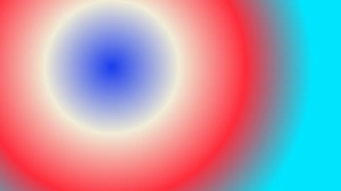
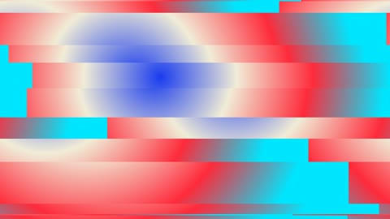
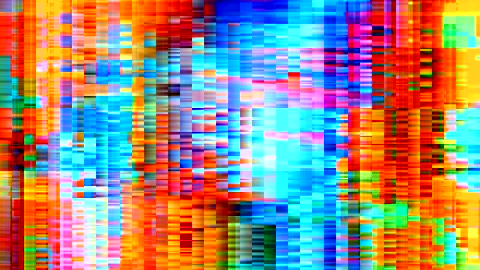
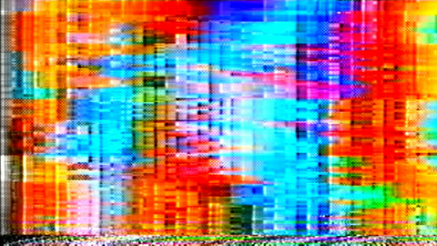
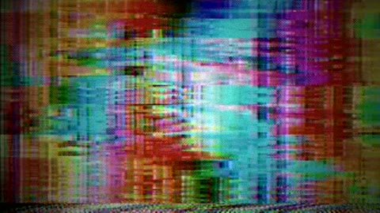
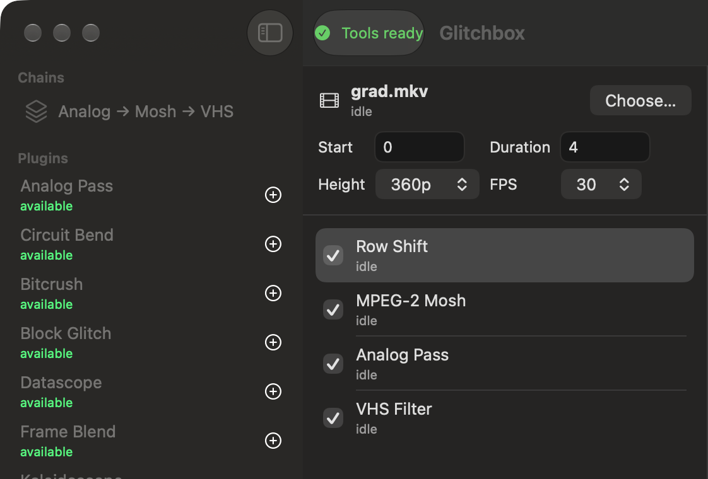

How a chain works
A chain starts with a source layer. It trims and scales your clip, converts it to constant-frame-rate FFV1, and pulls the audio out as a WAV file. Every layer after that runs one plugin with its own parameters.
Layers hand lossless FFV1 files down the stack, and each one is cached. Change a layer and only that layer and the ones below it render again.
Save a stack as a chain preset. Your presets and plugins live in ~/Library/Application Support/Glitchbox, and a file there with the same name as a built-in one replaces it.
-

Source ffmpeggradients -

row-shiftintensity 0.3, max 0.2 -

mpeg2-moshSink and rise preset -

analog-passdefaults -

vhs-filtersaturation 0.6

Demo reel
Each clip is a four-second Glitchbox render at 360p, shown without sound. The sources are ffmpeg’s built-in generators, and every chain is a file in the repo under site/demos.
VHS dub
- Source
- SMPTE HD bars with a white bar rolling across
- Chain
analog-passat its defaults, which matchpresets/vhs.json: head switching, tracking noise, edge wave, and ringing from ntsc-rs
Long smear
- Source
- Drifting gradient bands
- Chain
mpeg2-moshwith the Long smear preset: a forced-motion-vector MPEG-2 encode, then each vector averaged over the last 30 frames
Zoom in, zoom out
- Source
- A Mandelbrot zoom, mapped to blue and bone
- Chain
mv-scriptrunningdd_zoomInOut.js, one of the DD-GlitchAssist ffedit scripts
Rolling tear
- Source
- Conway’s Game of Life with mould trails
- Chain
benderwith its Rolling tear preset, which switches in the sync separator and rail sag bends
Smeared test card
- Source
- ffmpeg’s
testsrc2test card - Chain
pixel-smeardrags pixels brighter than 100 up to 200 px vertically, thenrgb-splitmoves red and blue 8 px apart
Kick drum on the tracking
- Source
- A disc that swells on every kick of a synthetic 120 bpm kick-and-hat track
- Chain
reactive-vcrlistening to that track through its default map: bass drives tracking noise, hits trigger head switching, and overall level adds snow
Plugins
The built-in library has 19 plugins. A plugin is a JSON file that declares typed parameters and the commands to run, and the plugin editor in the app writes the same format.
Datamosh with FFglitch
- MPEG-2 Mosh
mpeg2-mosh - Forced-motion-vector MPEG-2 encode, then a motion-vector mosh with an average window, axis scales, and drift. Presets for long smear, pan drift, and sink and rise.
- MV Script
mv-script - The same encode, then one of the deterministic DD-GlitchAssist ffedit scripts.
- MV Mangle
mv-mangle - Seeded MPEG-4 motion-vector shuffle.
Analog video
- Analog Pass
analog-pass - NTSC and VHS simulation through ntsc-rs, with every ntsc-rs setting exposed.
- Reactive VCR
reactive-vcr - Audio-reactive VCR artifacts, driven by the source’s own audio or an audio file you choose.
- VHS Filter
vhs-filter - An ffmpeg VHS filtergraph with levels, misregistration, noise, softness, and vignette controls.
Circuit bending
- Circuit Bend
bender - Circuit-bent video hardware through bender-rs. Each stage of the video path, from camera sensor and tape to frame store, colour encoder, monitor, and feedback loop, can be broken the way a stray wire would break it. Every bender setting and stage order is exposed, and bender’s bundled presets come with it.
ffmpeg filters
- Trails
trails - Each pixel decays slowly instead of going dark.
- Frame Blend
frame-blend - Blends each frame with the one before it: ghosting, motion edges, temporal XOR.
- Datascope
datascope - Draws the pixels under a window as their numeric values.
- RGB Split
rgb-split - Offsets the red, green, and blue planes independently.
- Pixel Smear
pixel-smear - Pixel-sort-style streaks: pixels past a brightness threshold are dragged along a direction, farther the brighter they are.
- Pixelate
pixelate - Mosaic blocks.
- Bitcrush
bitcrush - Cuts each RGB channel to a few bits for banding and posterized colour.
frei0r effects
- Block Glitch
block-glitch - Random block shifts and colour glitches.
- Row Shift
row-shift - Shifts bands of rows to and fro.
- Plasma Distort
plasma-distort - Wobbles the image along a moving plasma field.
- Kaleidoscope
kaleidoscope - Mirrors segments around a point.
- Vertigo
vertigo - Feedback blend with a zoomed, rotating copy of the previous frame.
Block Glitch and Row Shift are random, so every render differs and the cache keeps the first one.
Command line and pipelines
The app carries a glitchbox command at Glitchbox.app/Contents/Helpers/glitchbox. It uses the same engine, library, and cache as the app.
# plugins, and whether their tools are present
glitchbox list
glitchbox render --chain analog-mosh-vhs \
--duration 3 --height 240 in.mp4
# clear the layer cache
glitchbox cleanThe repo also holds the terminal pipelines the app grew out of. They are seeded and content-addressed: each run writes a manifest with the input digest, every resolved parameter, and the toolchain’s identity, so an artifact can be regenerated byte for byte.
# analog-pass, then mv-mangle, then a final encode
just chain input.mkv 42
# run the chain twice and compare every stage
just verify-repro input.mkv 42Install
You need an Apple silicon Mac with macOS 26 or later. Intel Macs and Linux aren’t built. Open Glitchbox-<version>.dmg and drag Glitchbox to Applications. The app takes about 190 MB on disk.
Builds are ad-hoc signed and not notarized, so Gatekeeper blocks the first launch of a downloaded copy. Allow it in System Settings → Privacy & Security → Open Anyway, or clear the quarantine flag:
xattr -dr com.apple.quarantine \
/Applications/Glitchbox.appBuilt on
These projects ship inside Glitchbox.app, and the app runs them for you.
- FFglitch 0.10.2ffgac and ffedit, for motion-vector datamosh
- ffglitch-scriptsthe DD-GlitchAssist scripts behind MV Script
- ntsc-rs 0.9.4NTSC and VHS emulation
- bender-rs 0.2.0circuit-bent video hardware
- reactive-vcr 0.4.0audio-reactive VCR artifacts
- FFmpeg 8.1.2decoding, encoding, and the ffmpeg filters
- x264H.264 encoding, linked into ffmpeg
- frei0r 2.5.1the frei0r effect plugins
- GStreamer 1.28.8the media runtime under ntsc-rs, bender, and reactive-vcr
- SoX 14.4.2audio processing for the pipelines
- jq 1.8.2building tool configs from plugin params
- bash 5.3.20runs plugin script steps